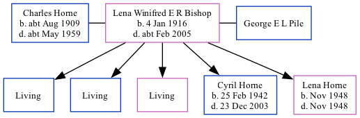

Lena Pile (née Bishop) 1916 - c2005
[ Home ] | [ Calendar ] | [ Surnames Index ] | [ Family History ]Lena Bishop, the wife of Charles Isaac Horne (the first cousin once-removed on the father's side of Nigel Horne), was born in Elham, Kent, England on Jan 4, 1916<span class="citation">1,2</span> and was married twice - to Charles Horne (<i>c.</i> Nov 1934 in Thanet, Kent, England) George E L Pile (in 1965 in Ashford, Kent, following the death of Charles Isaac <i>c.</i> May 1959)<span class="citation">3</span>. She had 5 children with Charles Horne: Michael C, Bernard D, Patricia B, Cyril Francis and Lena Winifred.<p>She died <i>c.</i> Feb 2005 in Kent<span class="citation">2</span>.
Children
- Cyril Francis was born on Feb 25, 1942
- Lena Winifred was born in Nov 1948
Citations
- England & Wales births 1837-2006 - Findmypast
- England & Wales deaths 1837-2007 - Findmypast
- England & Wales, Marriage Index: 1916-2005 Online publication - Provo, UT, USA: The Generations Network, Inc., 2009.Original data - General Register Office. England and Wales Civil Registration Indexes. London, England: General Register Office. © Crown copyright. Published by permission of the Cont
Media
England & Wales marriages 1837-2008 Transcription - BMD-M-1934-4-AZ-000109-053
England & Wales marriages 1837-2008 Transcription - BMD-M-1934-4-AZ-000622-041
UK electoral registers 2002-2014 Transcription - 192-PILE-LENA-TN26-2737222089
England & Wales deaths 1837-2007 Transcription - BMD-D-2005-3-86206243
England & Wales deaths 1837-2007 Transcription - BMD-D-2005-3-86378509
England & Wales Births 1837-2006 - BMD-B-1916-1-AZ-000117-029
Family Tree
Generated by Ged2Site. Last updated on Jul 20, 2025